Marcos de radiador en Panamá
59 disponibles hoy, originales y genéricas, cada una con su foto y su código. Elige la marca de tu carro:
- Garantía de 3 días
- Foto real de cada pieza
- Efectivo, Yappy o ACH
- Lunes a sábado, 8:00 a. m. a 5:00 p. m.
Marcos de radiador para KIA 21
 MR002KIA Cerato2017-19 · genérico
MR002KIA Cerato2017-19 · genérico MR003KIA Sportage2011-16 · original
MR003KIA Sportage2011-16 · original MR004KIA Soluto2020-26 · original
MR004KIA Soluto2020-26 · original MR005KIA Soluto2020-26 · original
MR005KIA Soluto2020-26 · original MR006KIA Rio2018-23 · genérico
MR006KIA Rio2018-23 · genérico MR007KIA Rio2018-23 · genérico
MR007KIA Rio2018-23 · genérico MR008KIA Rio2018-23 · genérico
MR008KIA Rio2018-23 · genérico MR009KIA Picanto2011-17 · original
MR009KIA Picanto2011-17 · original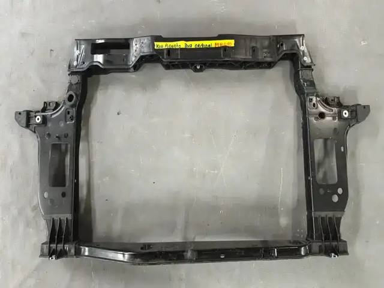
MR010KIA Picanto2011-17 · original MR012KIA Rio2012-17 · original nuevo
MR012KIA Rio2012-17 · original nuevo MR050KIA Sportage2000-05 · original
MR050KIA Sportage2000-05 · original MR051KIA Sportage2000-05 · original
MR051KIA Sportage2000-05 · original MR052KIA Sportage2000-08 · original
MR052KIA Sportage2000-08 · original MR053KIA Rio2001-04 · original
MR053KIA Rio2001-04 · original MR054KIA Rio2001-04 · original
MR054KIA Rio2001-04 · original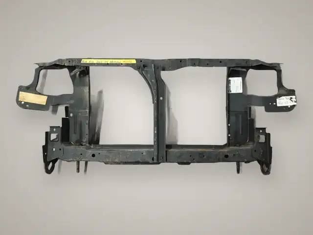
MR055KIA Rio2001-04 · original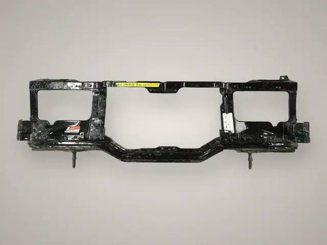
MR056KIA Sportage2000-03 · original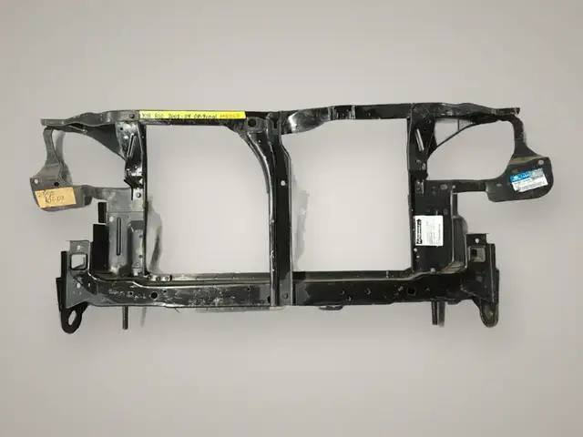
MR057KIA Rio2001-04 · original MR058KIA Rio2001-04 · original
MR058KIA Rio2001-04 · original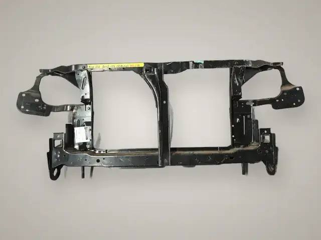
MR059KIA Rio2001-04 · original MR060KIA Rio2001-04 · original
MR060KIA Rio2001-04 · originalMarcos de radiador para Toyota 10
 MR028Toyota Hilux2016-26 · genérico
MR028Toyota Hilux2016-26 · genérico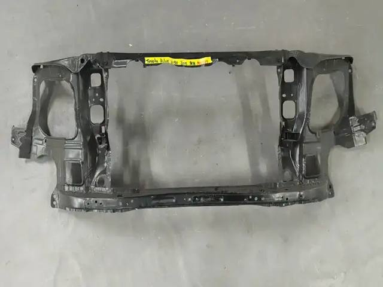
MR029Toyota Hilux Vigo2005-15 · genérico MR037Toyota Yaris2014-22 · genérico nuevo
MR037Toyota Yaris2014-22 · genérico nuevo MR038Toyota RAV42013-18 · original nuevo
MR038Toyota RAV42013-18 · original nuevo MR039Toyota RAV42013-18 · genérico
MR039Toyota RAV42013-18 · genérico MR040Toyota Yaris2014-22 · genérico
MR040Toyota Yaris2014-22 · genérico MR041Toyota RAV42013-18 · genérico
MR041Toyota RAV42013-18 · genérico MR061Toyota Tercel1995-99 · original
MR061Toyota Tercel1995-99 · original MR062Toyota Hilux2016-26 · genérico
MR062Toyota Hilux2016-26 · genérico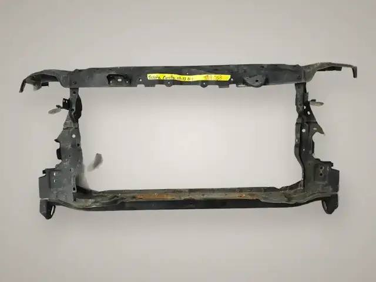
MR063Toyota Corolla2008-13 · originalMarcos de radiador para Hyundai 7
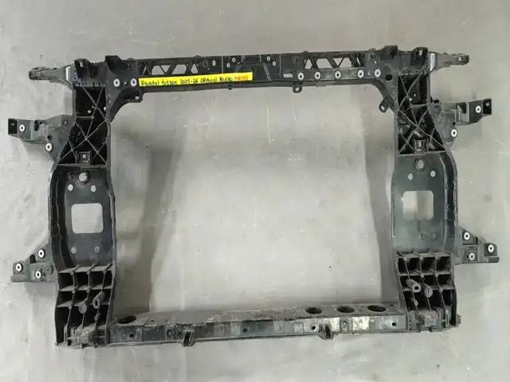
MR013Hyundai Tucson2022-26 · original nuevo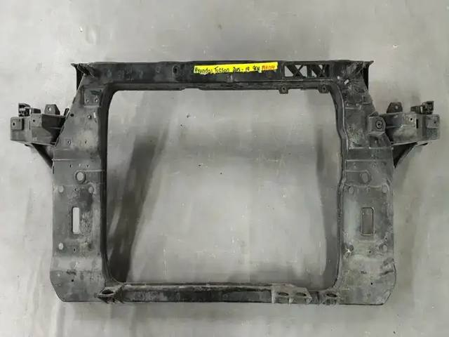
MR014Hyundai Tucson2015-19 · genérico MR015Hyundai Santa Fe2019-23 · original
MR015Hyundai Santa Fe2019-23 · original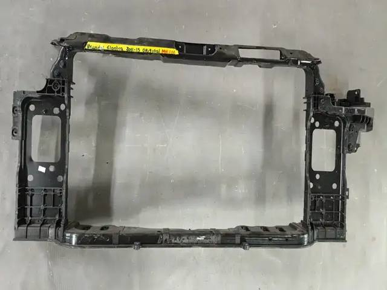
MR016Hyundai Elantra2011-15 · original MR017Hyundai Elantra2011-15 · genérico
MR017Hyundai Elantra2011-15 · genérico MR019Hyundai Grand i102020-26 · genérico
MR019Hyundai Grand i102020-26 · genérico MR020Hyundai Grand i102020-26 · genérico
MR020Hyundai Grand i102020-26 · genéricoMarcos de radiador para Audi 3
 MR021Audi Q72006-15 · original
MR021Audi Q72006-15 · original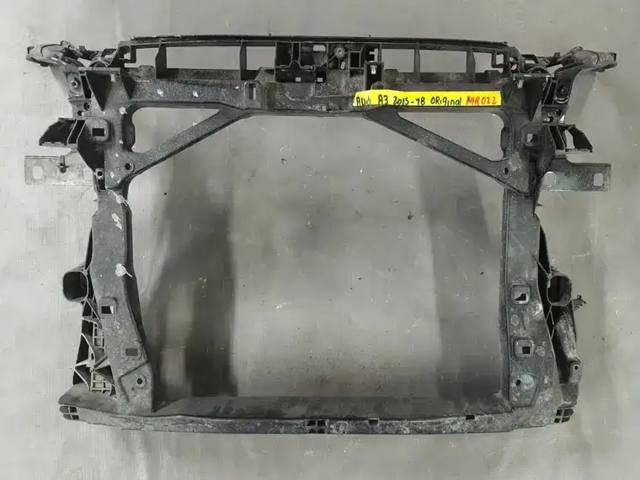
MR022Audi A32015-18 · original MR023Audi A42009-12 · original nuevo
MR023Audi A42009-12 · original nuevoMarcos de radiador para GAC 2
 MR025GAC Emkoo
MR025GAC EmkooMarcos de radiador para Chevrolet 2
 MR032Chevrolet Beat
MR032Chevrolet BeatMarcos de radiador para Volkswagen 2
 MR033Volkswagen Gol2017-20 · original
MR033Volkswagen Gol2017-20 · original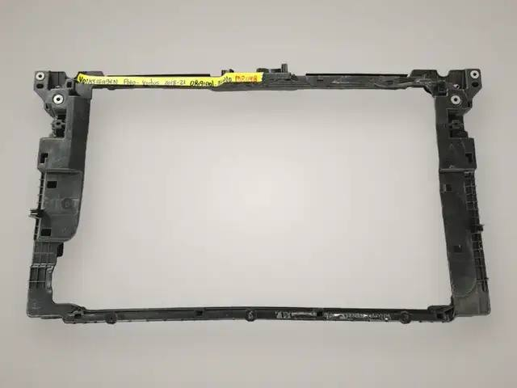
MR048Volkswagen Polo / Virtus2018-21 · original nuevoMarcos de radiador para Ford 2
 MR034Ford Edge
MR034Ford EdgeMarcos de radiador para Honda 2
 MR042Honda CR-V
MR042Honda CR-V MR046Honda City
MR046Honda CityMarcos de radiador para Infiniti 1
Marcos de radiador para MG 1
Marcos de radiador para Isuzu 1
Marcos de radiador para Nissan 1
Marcos de radiador para Mazda 1
 MR035Mazda 2
MR035Mazda 2Marcos de radiador para BYD 1
 MR044BYD Song Plus
MR044BYD Song PlusMarcos de radiador para Changan 1
Marcos de radiador para Mitsubishi 1
 MR047Mitsubishi Xpander
MR047Mitsubishi XpanderOtros tipos de pieza
Parrillas 327Faros y lámparas delanteras 250Defensas traseras 246Lámparas traseras 211Defensas delanteras 204Flares 176Covers de halógena 151Guardafangos 141Halógenas y faros antiniebla 112Puertas 98Cubrepolvos 91Capós 69Refuerzos delanteros 69Tapas de baúl 60Retrovisores 57Estribos y rolling boards 55Defensas delanteras inferiores 52Defensas traseras inferiores 51Tapas superiores de radiador 47Vidrios 47Refuerzos traseros 26Copas 21Molduras traseras 19Extensiones de defensa trasera 18Protectores inferiores 14Ventiladores 13Depósitos de agua 13Guardafangos traseros 12Extensiones de defensa delantera 6Accesorios nuevos 5Soportes de defensa 2